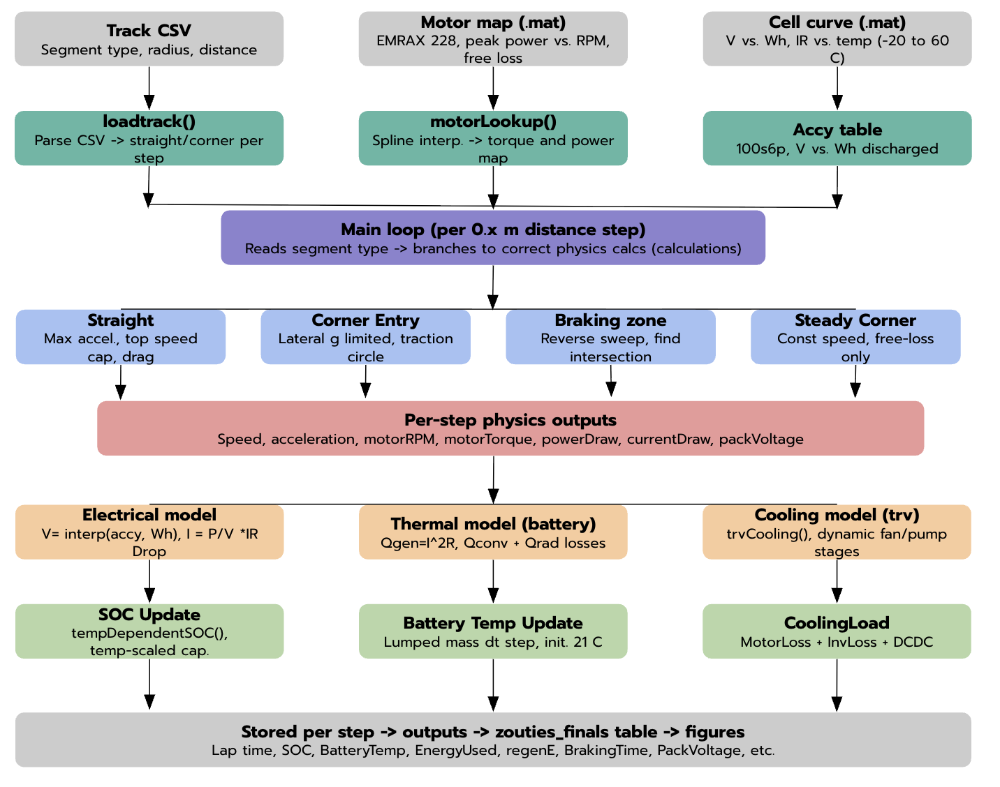
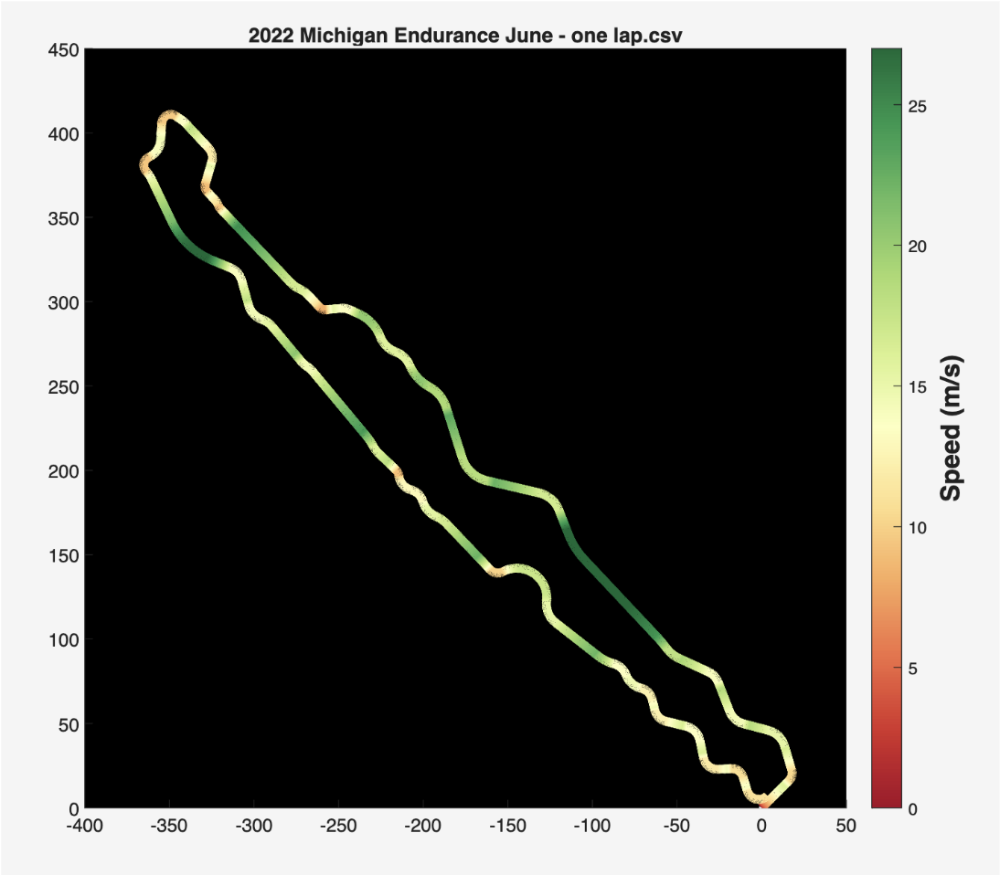
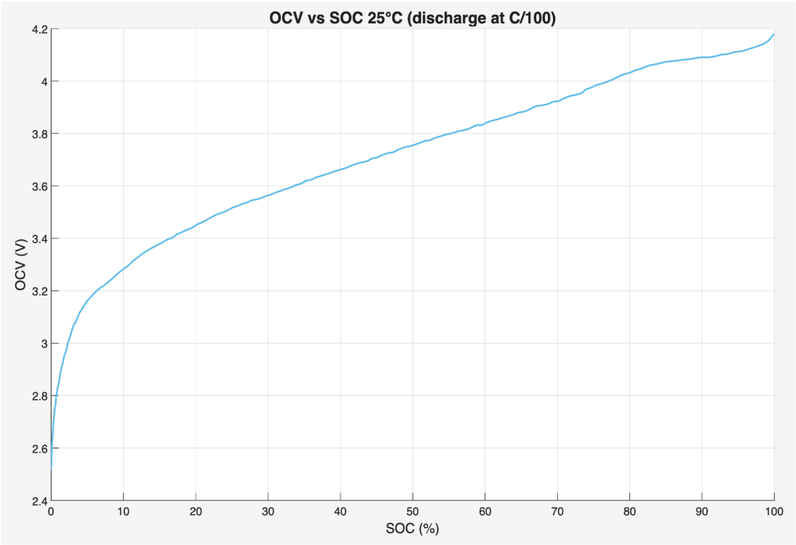
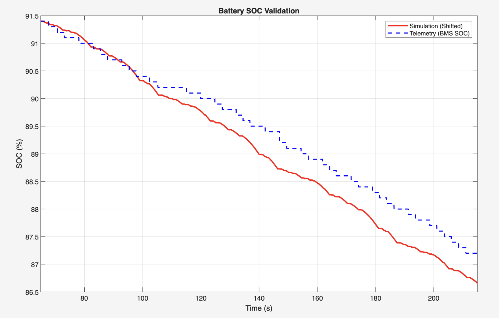
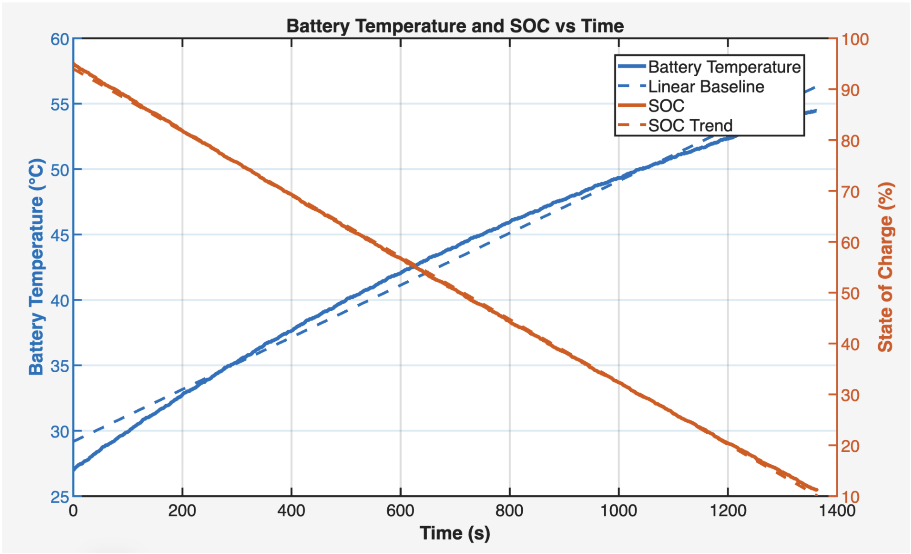
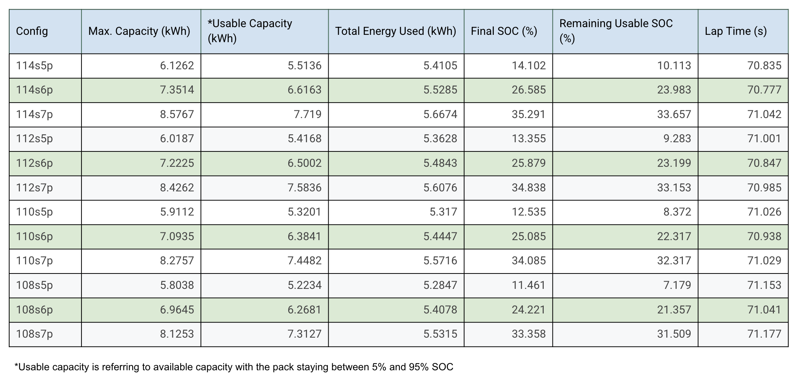
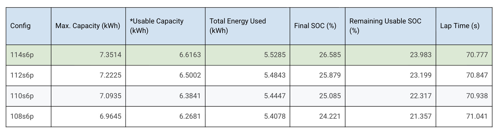

Point-Mass EV Lap Simulation
MATLAB · Vehicle dynamics · Battery modeling · Accumulator sizing
I developed this MATLAB simulation to model our Formula SAE EV and help size the accumulator. It combines track geometry, vehicle dynamics, motor limits, battery voltage and current, SOC, thermal behavior, and cooling so I can see how a change to the accumulator affects the whole car over an endurance event.

Overview
I originally built the simulation to predict vehicle performance, but one of its main uses became accumulator sizing. Changing the number of cells in series or parallel affects a lot more than just energy capacity: it changes pack voltage, current per cell, voltage sag, thermal loading, mass, and ultimately how much performance the car can actually use.
I didn't want to compare those effects separately, so I coupled the accumulator model directly to the vehicle simulation. At each step around the track, the model calculates what the car is doing, determines the requested motor power, converts that to an electrical load on the accumulator, and then updates pack voltage, current, SOC, and battery temperature.
That means battery limitations can feed back into vehicle performance instead of the model assuming the car always has the same amount of power available. I used the final model to compare candidate accumulator configurations and support our selection of a 114s6p pack for the 2026–27 car.
Model outputs
- Lap and endurance time
- Vehicle speed and acceleration
- Motor speed, torque, and power
- Accumulator current and voltage
- Energy consumption
- State of charge
- Battery temperature
- Regenerative energy
- Current-limited available torque
Point-mass vehicle model
I model the car as a point mass and step it around the track by distance. The track is loaded from a CSV containing each segment's type, radius, and length, so the simulation knows when the car is on a straight, entering a corner, braking, or at steady-state cornering.
On a straight, acceleration is limited by available motor torque and power, aerodynamic drag, top speed, and whatever power the accumulator can provide at that point in the run. During corner entry, the available longitudinal force is reduced by the lateral acceleration needed to follow the corner.
I solve braking zones backward from the required corner speed. Instead of guessing where braking starts, the model works backward from the corner to determine how much distance the car needs to slow down, then combines that with the forward acceleration solution.
The motor model uses performance data for the EMRAX 228 to determine available torque and power as motor speed changes. I also include motor and drivetrain losses when converting between mechanical power at the wheels and electrical power from the accumulator.

Accumulator electrical model
I coupled the vehicle model directly to an electrical model of the accumulator because I didn't want to assume that the car always has the same power available. At every simulation step, the requested mechanical power is converted into electrical power and pack current.
Cell discharge data gives me open-circuit voltage as a function of SOC, and internal resistance is used to estimate voltage sag under load. As energy is removed from the pack, I update SOC and cell voltage before calculating the next step.
This matters because a smaller accumulator may have enough total energy to finish endurance but still become performance-limited by current or voltage sag. If the requested motor power would require more current than the selected pack can provide, the model reduces the available motor torque instead of allowing an impossible operating point.

Model validation
I compared the simulated accumulator SOC against BMS telemetry from the actual car instead of only checking the model against its own outputs. This gives me a direct way to see whether the combined vehicle and electrical model is reproducing the energy usage we see on track.
The simulated SOC follows the measured trend over the validation interval. The remaining difference is also useful because it gives me something concrete to look at when improving assumptions and parameters in the model.

Battery thermal model
I also added a lumped thermal model so accumulator sizing isn't based only on energy and electrical performance. At each step, the model calculates Joule heating from battery current and internal resistance and compares it against heat being lost to the environment.
Cth dT/dt = Qgen − Qloss
Qloss = hc(Tbatt − Tamb) + hr(Tbatt4 − Tamb4)
The accumulator is treated as one thermal mass with a single temperature state and thermal capacitance. Battery temperature is updated throughout the run as current demand changes around the track.
Temperature also feeds back into the electrical model instead of only being an output. I use the simulated battery temperature in the temperature-dependent SOC calculations, so changing thermal conditions can affect the estimated usable capacity as endurance progresses.
This became especially useful when comparing different parallel counts. Going to fewer parallel cells saves accumulator mass, but it also puts more current through each cell, which increases Joule heating, voltage sag, and temperature rise. The model lets me look at those effects together instead of choosing a pack based on mass or capacity alone.

Cooling and auxiliary loads
Not all of the accumulator's energy ends up producing tractive force, so I also include the loads around the powertrain. Motor and inverter losses contribute to the thermal load, while the cooling system and DC-DC loads contribute to the total electrical energy used during endurance.
I model the cooling system dynamically instead of treating it as one constant power draw. Fan and pump operation can change during the event, and their power consumption is included in the load seen by the accumulator. This gives me a more complete energy estimate than only integrating the motor's requested power.
Accumulator sizing
This is one of the main reasons I built the model. We needed to choose the series and parallel cell count for the 2026–27 accumulator, and I didn't want to make that decision from nominal energy capacity alone.
Increasing series count raises pack voltage and changes the operating point of the motor and inverter. Changing parallel count affects energy capacity, current per cell, voltage sag, temperature, and pack mass. Because all of those effects are coupled in the simulation, I could run each candidate through the same endurance event and compare the complete result.
I evaluated configurations from 108 to 114 cells in series and from five to seven cells in parallel. For each one, I tracked energy consumption, final SOC, remaining usable energy, thermal behavior, and simulated lap time.
Parallel-cell selection
I first compared 5p, 6p, and 7p configurations across several series counts. The 5p packs reduced cell count and accumulator mass, but they left relatively little usable energy margin after the simulated endurance event and put more current through each cell.
Going to 7p moved in the other direction. It gave the pack substantially more energy margin and reduced the electrical load on each cell, but it also added another full parallel group of cells and the corresponding accumulator mass.
Six cells in parallel ended up being the middle ground I wanted. It kept significantly more usable energy at the end of endurance than the 5p configurations without taking the mass penalty of a 7p accumulator.

Series-cell selection
After settling on 6p, I compared 108s, 110s, 112s, and 114s. Increasing series count raises the pack voltage and usable energy, but because the accumulator is coupled to the motor and vehicle models, I could also see how that change affected performance instead of looking at voltage by itself.
Of the 6p configurations I evaluated, 114s6p gave the fastest simulated lap time and the largest remaining usable SOC. The model predicted a 70.777 s lap and about 24% remaining usable SOC after the endurance simulation.

That analysis supported our selection of a 114s6p accumulator: 684 cells, 478.8 V maximum pack voltage, and approximately 7.35 kWh of nominal energy.
Selected configuration
For the selected 114s6p pack, I ran the complete endurance simulation starting at 95% SOC. The vehicle and accumulator states are updated continuously throughout the event rather than repeating one fixed lap at a constant battery condition.
In this run, the model used approximately 5.53 kWh and finished at 26.6% SOC. With the pack constrained to a 5–95% operating range, that leaves about 24% of usable SOC at the end of endurance. The simulated lap time was 70.777 seconds.
Cell count: 684
Maximum pack voltage: 478.8 V
Nominal energy: ≈ 7.35 kWh
Usable energy (5–95% SOC): ≈ 6.62 kWh
Starting SOC: 95%
Simulated energy used: ≈ 5.53 kWh
Final SOC: ≈ 26.6%
Remaining usable SOC: ≈ 24.0%
Simulated lap time: 70.777 s
Model development
I didn't build all of this at once. The earlier versions were mostly focused on generating a vehicle speed profile and estimating energy demand. As I got more vehicle, motor, cell, and telemetry data, I added the electrical limits, SOC model, battery temperature, cooling behavior, and feedback between the accumulator and vehicle model.
I'm also using measured vehicle data to keep improving it. The goal isn't just to make a lap-time predictor; I want the model to be useful for actual vehicle-level decisions like accumulator sizing and powertrain limits.